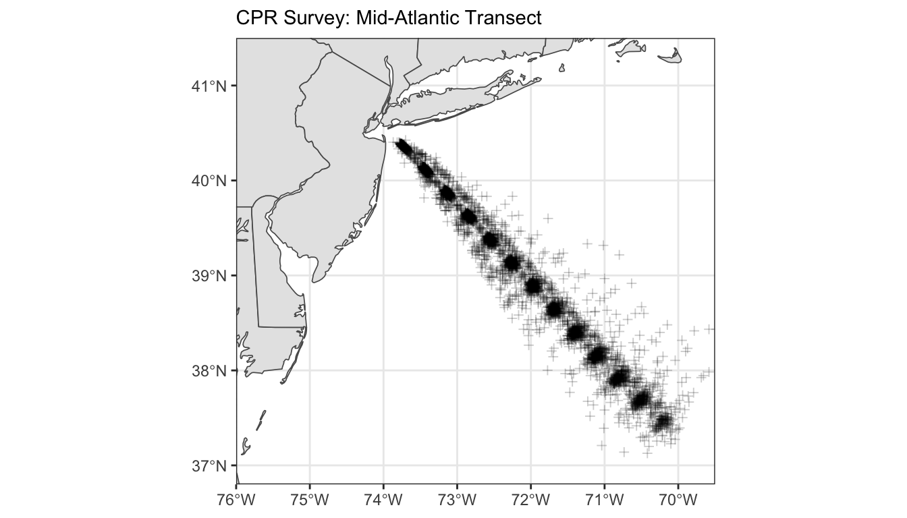

Chapter 1 About the Project
This report documents the data used for our studies using the Continuous Plankton Recorder Survey (CPR) data, and all data wrangling performed for the analyses.
1.1 CPR Data Provenance
The data for the continuous plankton recorder survey (CPR) has been collected and maintained by multiple government and non-government organizations.
The methods for data collection and sampling processes have remained consistent, however the data processing/storage has revealed some differences across research entities.
This documentation seeks to document the different data available to us here, and the data contained within each starting point. Once the starting points are clear, the data processing steps will be detailed to provide clarity on how these different resources can be used together.
All final processing code has been moved to the {targets} pipeline, with all processing steps written as functions in:
> R/support/gom_cpr_pipeline_support.R
1.2 CPR Data: Starting Points
Tracking the data provenance will be documented here for three distinct “starting points”. These starting points are how the data was delivered to us from various institutions, and each starting point has specific data wrangling steps performed in preparation for any analyses.
The three starting points are:
1. Individual files for single taxon, for the Gulf of Maine Transect
2. Files containing data for all taxa, for the Gulf of Maine Transect
3. Files containing data for all taxa, for the Mid-Atlantic Bight Transect
1.3 CPR Survey Transects
1.3.1 Gulf of Maine Transect
Data for the Gulf of Maine transect was transferred to us from two sources. The Sir Alister Hardy Foundation, and the Northeast Fisheries Science Center.
This transect crosses the Gulf of Maine from off the Southern tip of Nova Scotia and to port in the US. The ship of opportunity that the CPR sampler is towed originally traveled to Boston, but transitioned to Portland more recently.

1.3.2 Mid-Atlantic Transect
Data for the Mid-Atlantic transect was transferred to us from the Northeast Fisheries Science Center. This transect crosses the Mid-Atlantic Bight, extending seaward from the New Jersey, New York Bight.
